This document covers the containerization strategy and process management configuration for the Signal trading system. It explains how the system is packaged using Docker and managed in production using PM2 (Process Manager 2) with automatic restart policies and resource monitoring.
For information about environment configuration and feature flags, see Environment Configuration. For details about the build system and dependency management, see Build System and Dependencies.
The Signal trading system uses Docker for containerization with a lightweight Alpine Linux base image running Bun as the JavaScript runtime. The container packages all necessary build artifacts and dependencies for production deployment.

The Docker configuration uses the Bun runtime for optimal performance with TypeScript/JavaScript applications. The container includes curl for health checks and API communications with external services.
The production deployment uses PM2 to manage two critical processes: the main trading application and the Binance integration tool. Each process has independent monitoring, logging, and restart policies.

| Process | Script | Purpose | Memory Limit |
|---|---|---|---|
tradegpt-one-main |
./build/index.mjs --serve |
Main trading application with web interface | 4096M |
tradegpt-binance |
./build/tools/binance-tool/build/index.mjs |
Binance API integration and market data | 4096M |
Both processes use:
fork (single instance per process)~/.bun/bin/bunThe PM2 ecosystem configuration includes dynamic environment loading that reads from .env files when available or falls back to system environment variables.

The readConfig() function uses a singleton pattern via singleshot() to cache the environment configuration and avoid repeated file system reads.
Each PM2 process maintains separate log files with timestamp formatting and automatic log merging. The logging configuration supports both output and error streams.
| Process | Output Log | Error Log | Format |
|---|---|---|---|
| Main Application | ./logs/pm2/tradegpt-one-main-out.log |
./logs/pm2/tradegpt-one-main-error.log |
YYYY-MM-DD HH:mm:ss |
| Binance Tool | ./logs/pm2/tradegpt-binance-out.log |
./logs/pm2/tradegpt-binance-error.log |
YYYY-MM-DD HH:mm:ss |
All processes use merge_logs: true to combine stdout and stderr streams into unified log files with consistent timestamp formatting.
The system implements multiple layers of process resilience to ensure continuous operation of the trading system.
| Restart Trigger | Frequency | Action | Impact |
|---|---|---|---|
| Cron Restart | Daily at 00:00 UTC | Clean restart both processes | Prevents memory leaks, clears caches |
| Memory Restart | When process exceeds 4096M | Automatic restart | Prevents OOM crashes |
| Crash Restart | Immediate on process exit | Automatic restart | Maintains system availability |
| Manual Restart | On-demand via PM2 commands | Controlled restart | Deployment and maintenance |
The autorestart: true configuration ensures that any unexpected process termination triggers an immediate restart attempt, while the memory limit prevents runaway memory consumption from affecting system stability.
The Docker container and PM2 configuration expect a specific directory structure with pre-built artifacts:

The containerized deployment separates the container entry point (index.cjs) from the PM2-managed processes, allowing for flexible process orchestration within the container environment.